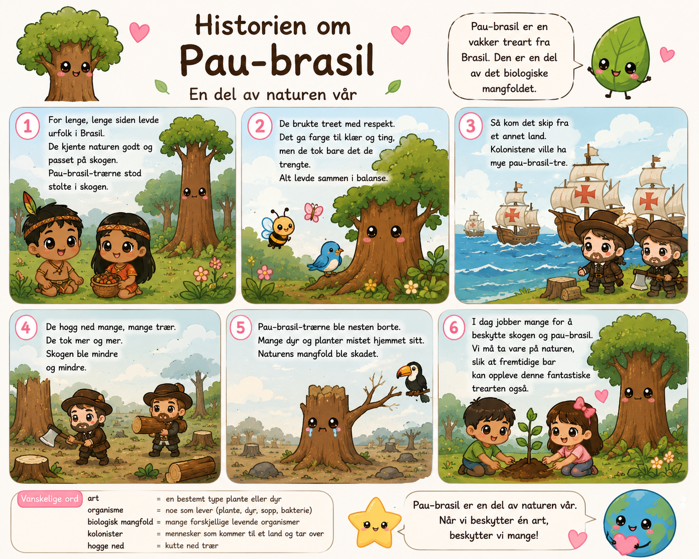

Naturfag · Biologisk mangfold
Pau-brasil
Historien om et tre fra Brasil – og hvorfor det nesten forsvant.
Steg 1 av 5 · Les historien

For lenge, lenge siden levde urfolk i Brasil. De kjente naturen godt og passet på skogen. Pau-brasil-trærne stod stolte i skogen.
De brukte treet med respekt. Det ga farge til klær og ting, men de tok bare det de trengte. Alt levde sammen i balanse.
Så kom det skip fra et annet land. Kolonistene ville ha mye pau-brasil-tre.
De hogg ned mange, mange trær. De tok mer og mer. Skogen ble mindre og mindre.
Pau-brasil-trærne ble nesten borte. Mange dyr og planter mistet hjemmet sitt. Naturens mangfold ble skadet.
I dag jobber mange for å beskytte skogen og pau-brasil.
Pau-brasil er en del av naturen vår. Når vi beskytter én art, beskytter vi mange!
Steg 2 av 5 · Finn riktig ord
Ordbank
artorganismebiologisk mangfoldkolonisterhogge ned
1. Pau-brasil er en ______ fra Brasil.
2. Et tre er en levende ______.
3. Mange forskjellige planter og dyr kalles ______.
4. Europeerne som kom til Brasil var ______.
5. De begynte å ______ mange pau-brasil-trær.
Steg 3 av 5 · Sett i riktig rekkefølge
Trykk på setningene i den rekkefølgen de skjedde.
Steg 4 av 5 · Hva skjedde – og hvorfor?
Fullfør hver setning. Husk: etter «derfor» kommer verbet først!
Steg 5 av 5 · Tenk og svar
Hvorfor ble pau-brasil truet?
menneskerhogge nedmange trærfærre
Hvorfor er pau-brasil en del av det biologiske mangfoldet?
artplantelevendenaturen
⭐ Dagens viktigste spørsmål
Hva betyr «biologisk mangfold»?
Prøv helt selv først – uten hjelp.
Hvilken passer best?